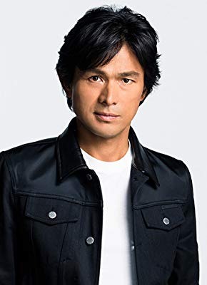

#9596 Bleach

 IMDB-Wertung: 6.5 / 10
IMDB-Wertung: 6.5 / 10  Tomatometer: 80
Tomatometer: 80  Metascore: 0
Metascore: 0 
Ichigo Kurosaki (Sôta Fukushi) ist scheinbar ein ganz normaler Schüler an einer Highschool und lebt in der Stadt Karakura. Doch er hat eine besondere Gabe: Schon seit er denken kann, hat er die Fähigkeit Geister, besser gesagt “Hollows” zu sehen. Eines Tages trifft er auf Rukia Kuchiki, ein Todesgott und Seelenräuber. Doch bald stellt sich heraus, dass Ichigo selber ein Seelenräuber ist und nun mit dieser Macht die Möglichkeit hat, Karakura und seine Einwohner, vor den bösen Geistern zu schützen.
Jahr: 2018
Dauer: 108 Minuten
FSK:
Land: Japan Studio: Warner Bros.Tonspuren: - , - , - , - , - ,
Untertitel: Deutsch,
Auflösung: 1080p (1920x1080) Größe: 4648 MB
Genre: Action, Abenteuer, Fantasy
Regisseur: Shinsuke Sato
Drehbuch: Tite Kubo, Daisuke Habara
Soundtrack: Yutaka Yamada
Darsteller:
- Miyavi als Byakuya Kuchiki
- Hana Sugisaki als Rukia Kuchiki
- Sôta Fukushi als Ichigo Kurosaki
- Erina Mano als Orihime Inoue
 Masami Nagasawa als Masaki Kurosaki
Masami Nagasawa als Masaki Kurosaki- Ryô Yoshizawa als Uryu Ishida
- Taichi Saotome als Renji Abarai
- Yû Koyanagi als Yasutora Sado
- Seiichi Tanabe als Kisuke Urahara
-  Yôsuke Eguchi als Isshin Kurosaki
Datei: X:\HD-Eastern-Modern(A-M)\Bleach (2018, FSK, 1920x1080).mkv seit 18.09.2018
Festplatte: HD Eastern+Western
 Es gibt insgesamt 104 Filme in der Gruppe 'HD-Eastern-Modern(A-M)'
Es gibt insgesamt 104 Filme in der Gruppe 'HD-Eastern-Modern(A-M)'